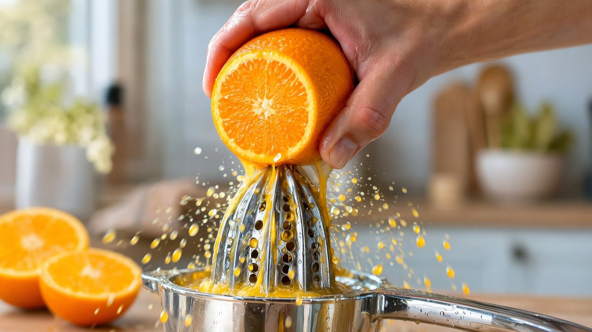
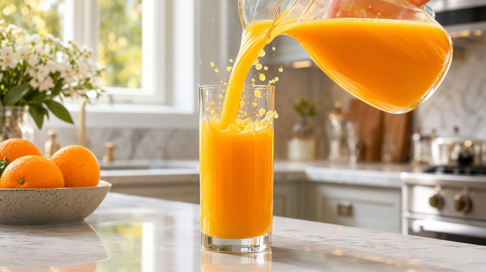
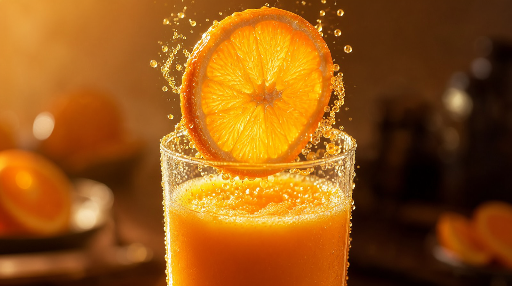
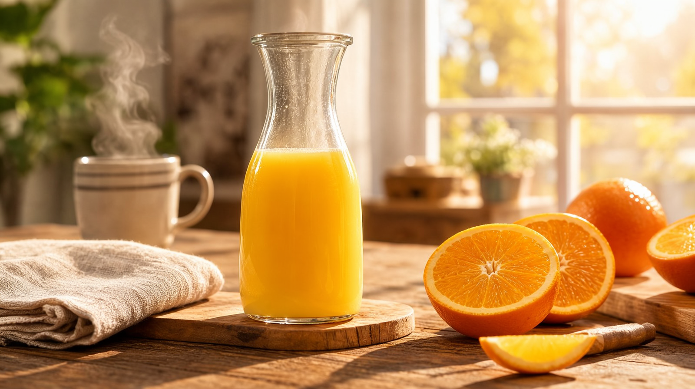
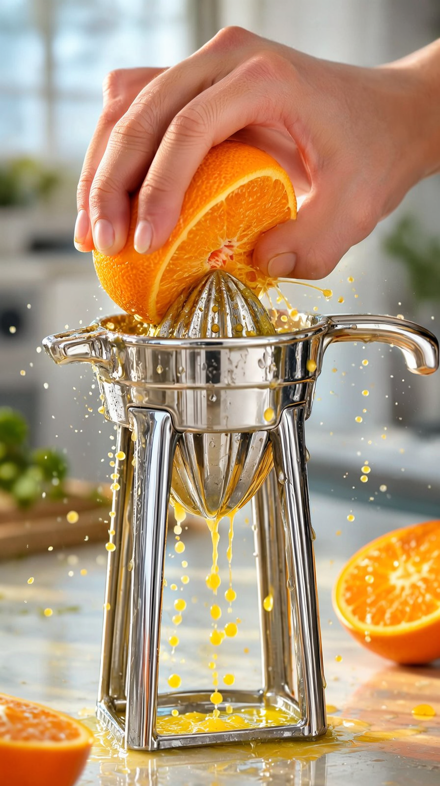
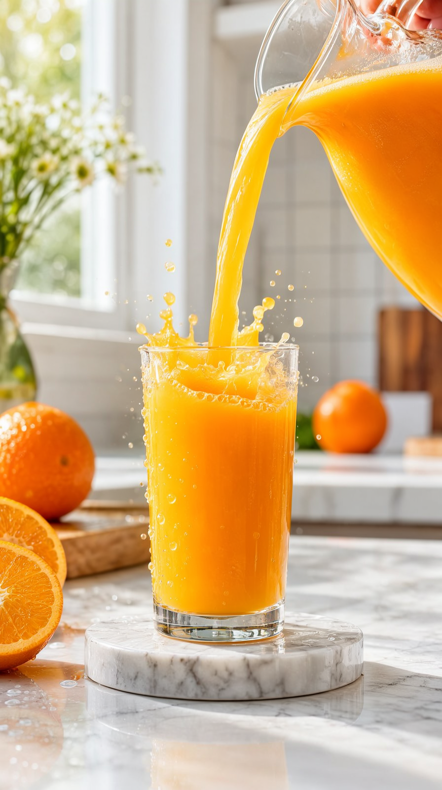
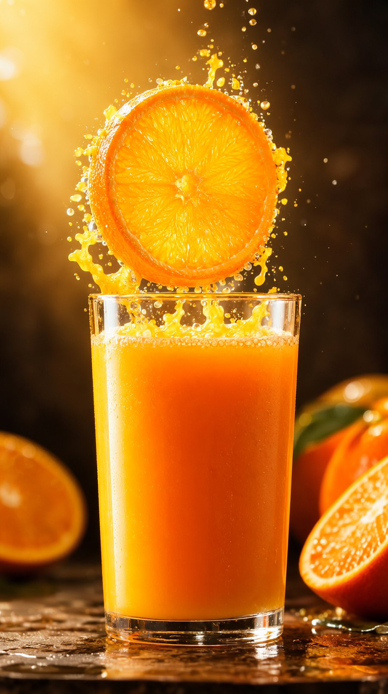
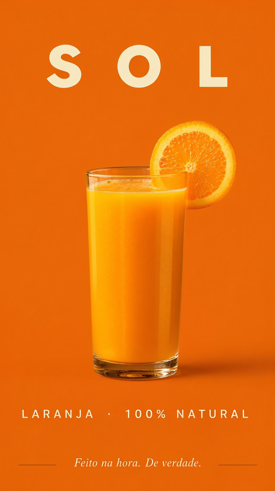

A crítica da v8 era certeira: tudo em câmera lenta, gravidade de mel. A v9 desmontou o problema com as três alavancas da pesquisa — prompt de energia (QA 9/10 de física), re-temporização por FPS (velocidade virou parâmetro de direção) e variedade de andamento (a lição da v7). Produto: SOL, suco de laranja — feito na hora, de verdade.
Mea-culpa → pesquisa → conserto
| Causa na v8 | Correcao na v9 | Prova |
|---|---|---|
| Pedimos slow-mo em todo take ("slow glossy ribbon") | Prompt de energia: "hits the surface at natural speed, droplets bounce with real gravity" | Take A/B no mesmo still: QA 9/10 de realismo de movimento — "vórtice turbulento de impacto, zero gotas suspensas" |
| Wan 2.2 tem bias documentado para slow-mo | Re-temporização por FPS: 121 frames exportados a 36/30/24 fps = 1,5×/1,25×/1× — gravidade em tempo real sem perder um frame | Takes da v8 re-exportados a 1,5×/2×; e a cadeia da v9 com fps por take |
| 4 takes viscosos em sequência (açaí) | Variedade de andamento: 2 beats em tempo real + herói lento curto e assumido + dolly tranquilo | QA de física por frame: espremer 9/10 ("gotas caem com gravidade real"), copo 9/10 |
O produto novo · 20 s · 1080p · 48 fps · velocidades misturadas








A jornada
| v1 | v2 | v3 | v4 | v5 | v6 | v7 | v8 | v9 | |
|---|---|---|---|---|---|---|---|---|---|
| Produto | Perfume | Café | Cerveja | Mel | Choc. | Vinho | Cachaça | Açaí | Laranja |
| Física/movimento | slow-mo como estética padrão (v8 levou ao limite) | tempo real por direção | |||||||
| QA | olho | VLM | VLM | VLM | VLM | VLM+áudio | VLM+ | +whisper | +física por frame |